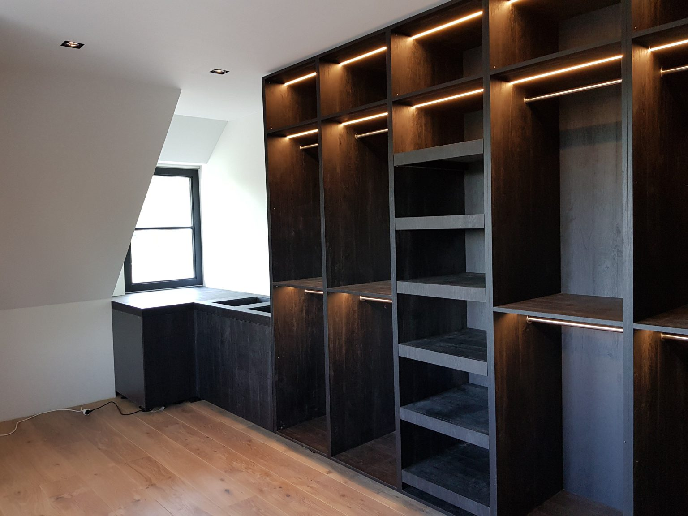
Timmerman in Apeldoorn
Gemaakt op maat. Gebouwd om te blijven.
Een kast onder de schuine kap of een tuinkamer achter het huis: Arie denkt met u mee, komt zijn afspraken na en levert netjes op.
5,0 uit 7 Google-reviews
Binnen en buiten, alles in hout.
Houtbouw en timmerwerk is het vak. Dat kan een inloopkast zijn die precies onder uw dakschuinte past, of een tuinkamer, veranda of aanbouw die er jaren tegen kan.
Binnen
Interieurbouw op maat: kasten en inloopkasten voor lastige hoeken en schuine daken, met verlichting erin als u dat wilt. Een tv-wandmeubel, een boekenwand. Ontworpen, gemaakt en gemonteerd door Arie.
- Kasten en inloopkasten op maat
- Tv- en wandmeubels
- Bibliotheek- en boekenwanden
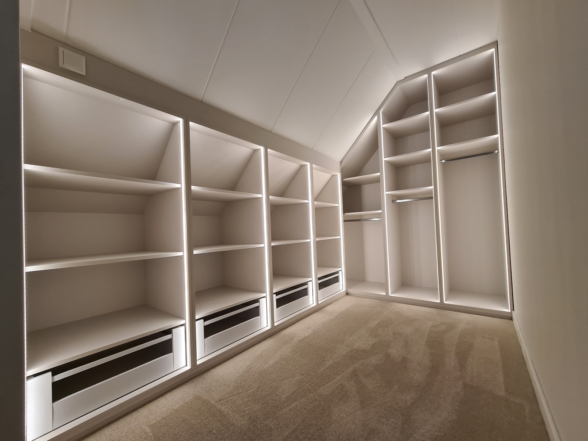
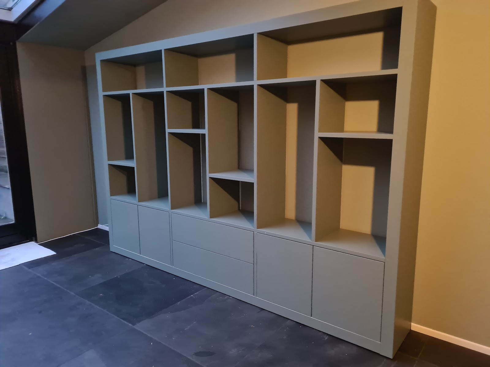
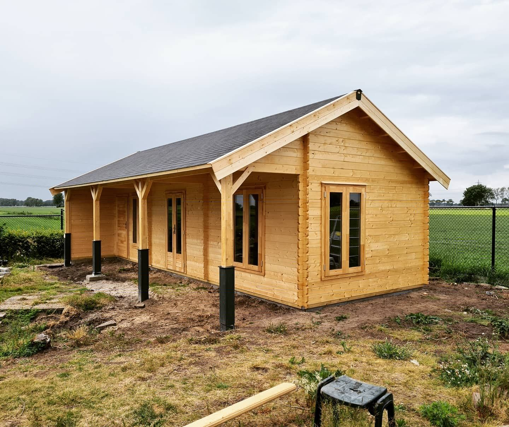
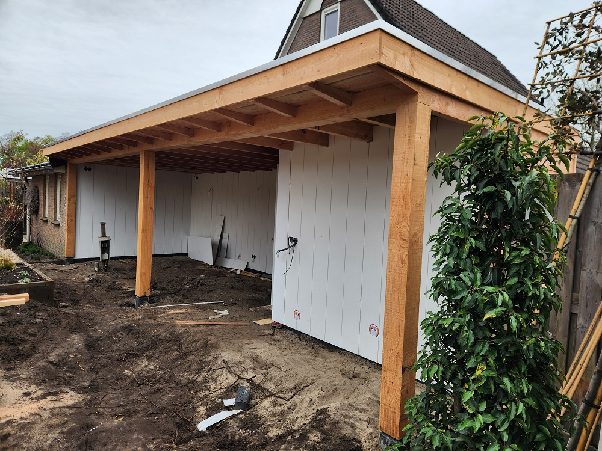
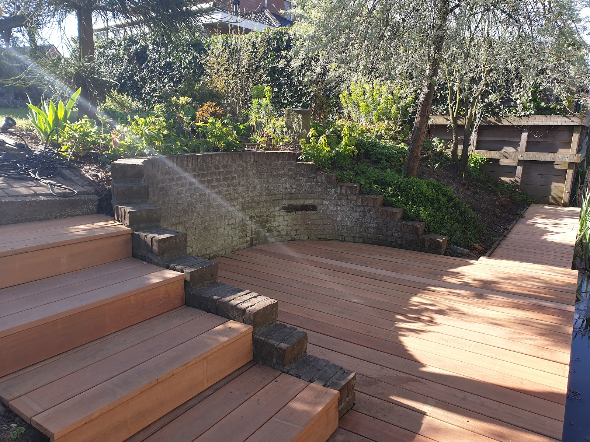
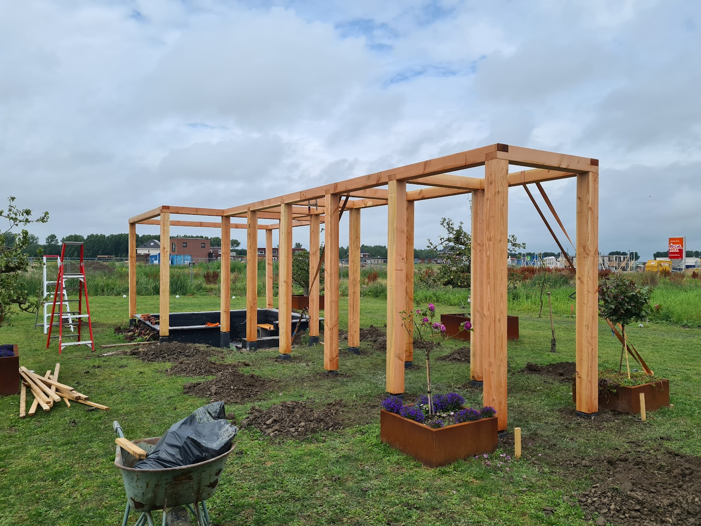
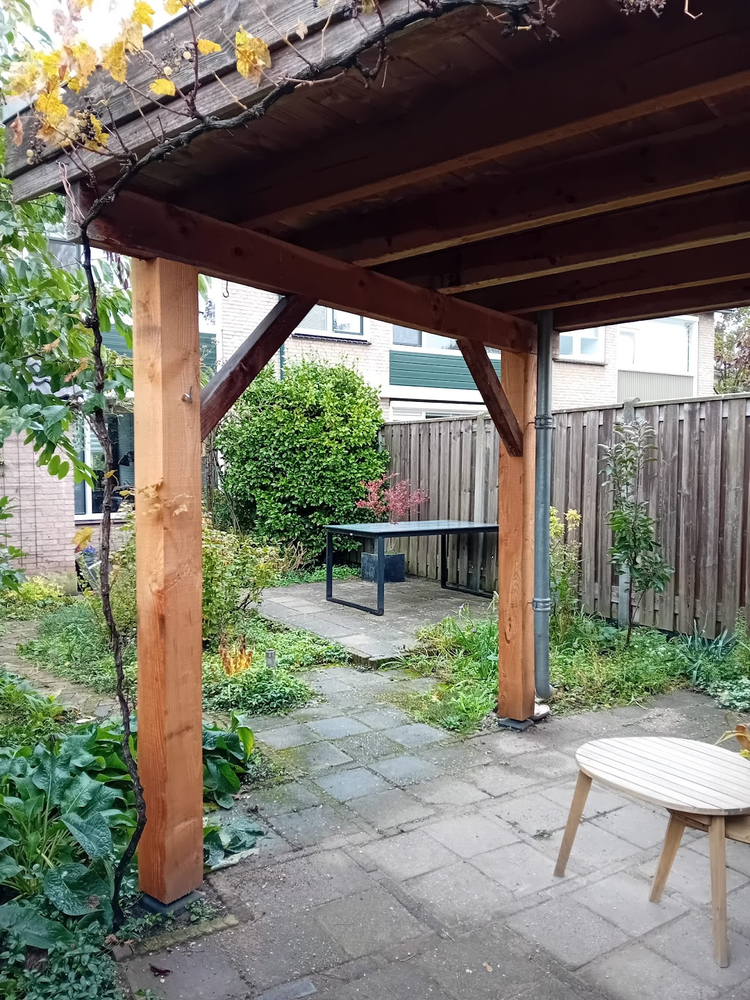
Buiten
Van tuinschuur tot tuinkamer en van pergola tot een compleet nieuw dak. Bouwkundig sterk en duurzaam, zodat het niet alleen mooi is op de dag van oplevering.
- Tuinkamers en veranda's
- Overkappingen, kapschuren en tuinschuren
- Aanbouwen en kleinbouw
- Dakrenovaties
- Houtconstructies op maat
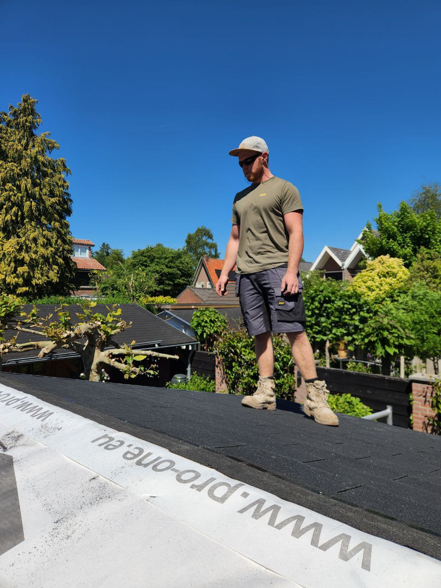
Mijn naam is Arie de Bie.
Sinds 2019 werk ik als zelfstandig timmerman, en dat doe ik met veel plezier. Mijn passie ligt bij het bouwen van mooie houtconstructies, met oog voor het klassieke ambacht.
Ik combineer traditioneel vakmanschap met moderne technieken. Efficiënt werken, zonder in te leveren op kwaliteit. En met verantwoorde materialen en slimme oplossingen, goed voor het milieu en voor uw portemonnee.
VLOK-erkend
Het VLOK-keurmerk staat voor persoonlijke service, kwaliteit en vertrouwen. Aangesloten bedrijven moeten aan strenge eisen voldoen en worden daar regelmatig op gecontroleerd.
Van eerste gesprek tot oplevering.
Duidelijke afspraken en één aanspreekpunt. Arie begeleidt het hele traject en denkt vanaf het begin actief met u mee.
-
1
Kennismaken en inspectie
U vertelt wat u voor ogen heeft, Arie komt kijken. De inspectie en de offerte zijn altijd vrijblijvend.
-
2
Meedenken en offerte
Wat vindt u mooi, wat past bij het huis? U krijgt eerlijk advies over uitvoering en mogelijkheden, en een nette offerte.
-
3
Bouwen en opleveren
Is er een vergunning nodig? Arie werkt samen met andere vakmensen, zodat u van vergunningaanvraag tot oplevering ontzorgd wordt.
Uit het werk
Een nieuw dak op het tuinhuis.
De oude golfplaten gingen eraf. Daarna kwam er nieuw houten dakbeschot op, met een waterdichte folie eroverheen. Als laatste zijn er nieuwe shingles op gelegd.
Ook kleine klussen krijgen dezelfde aandacht. Een rotte paal in de tuin wordt bijvoorbeeld vervangen door een nieuwe, netjes op een voet zodat hij droog blijft staan.
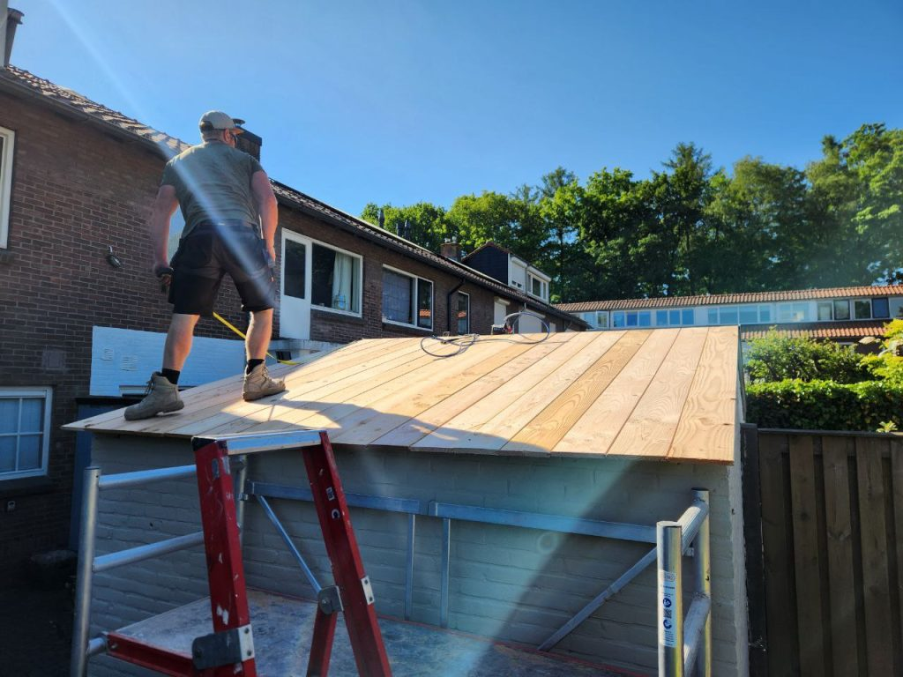
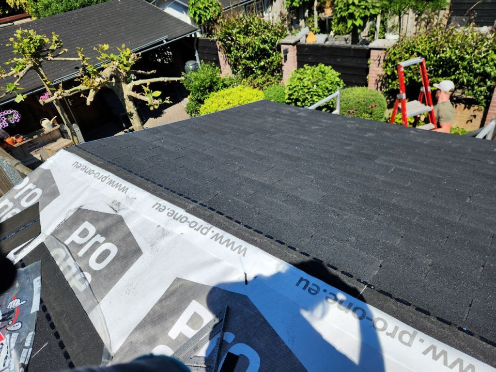
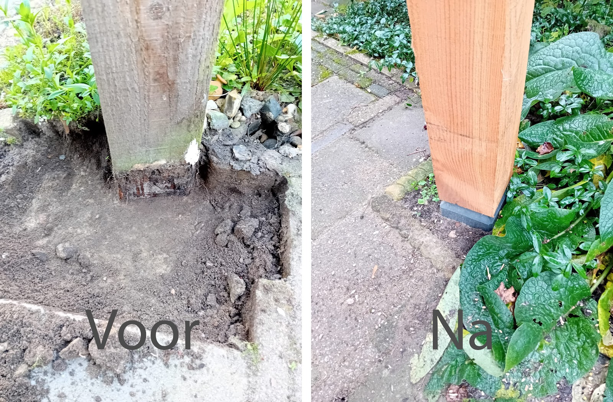
Wat klanten over Arie zeggen.
5,0 uit 7 reviews op Google
“Onlangs een prachtig tv wandmeubel laten ontwerpen, produceren en monteren door Arie de Bie. Superfijn hoe hij eerlijk meedenkt en adviseerd in uitvoering en mogelijkheden. Arie komt zijn gemaakte afspraken na, werkt snel en netjes. Ik ben dolgelukkig met mijn prachtige wandkast met sfeerhaard.”
“Wij hebben een kapschuur inclusief schuurtje door Arie laten bouwen. We zijn ontzettend blij met Arie, hardwerkende man, denkt fijn mee met ideeën en oplossingen. Komt afspraken na. wij kunnen Arie van harte aanbevelen!”
“Arie heeft bij ons een tuinschuur gebouwd. Alles netjes in overleg. Harde werker en betrouwbaar. Werkt netjes en een prettige persoonlijkheid.”
“Heel blij met Arie! Canexel moest vervangen worden door Keralit aan zijgevel op 1e en 2e etage, wat boven glazen serredak is. En boven voordeur. Nette offerte. Denkt met je mee en is heel vriendelijk. Arie levert keurig werk en werkt snel en constructief. Echt een vakman. Was lastig project, maar Arie heeft t goed en v…”
“Ik ben in contact gekomen met Arie via een vriend van me waar hij een mooie overkapping heeft gebouwd. Daarna ben ik met Arie in overleg gegaan met mijn vrouw, we hebben aangegeven wat we mooi vonden en zijn met concrete voorbeelden gekomen. Hierop heeft Arie heel goed meegedacht en voorstellen gedaan. Samen zijn we…”
Vertel Arie wat u wilt laten maken.
Plannen voor een kast, aanbouw, dakrenovatie of tuinkamer? Bel even, of stuur een bericht. Arie komt vrijblijvend kijken en maakt een offerte.
06 55058077- ariedebie@outlook.com
- Adres
- Deventerstraat 199
7322 RE Apeldoorn - Openingstijden
-
Maandag t/m vrijdag 08:00 tot 17:00 Zaterdag 10:00 tot 15:00 Zondag Gesloten